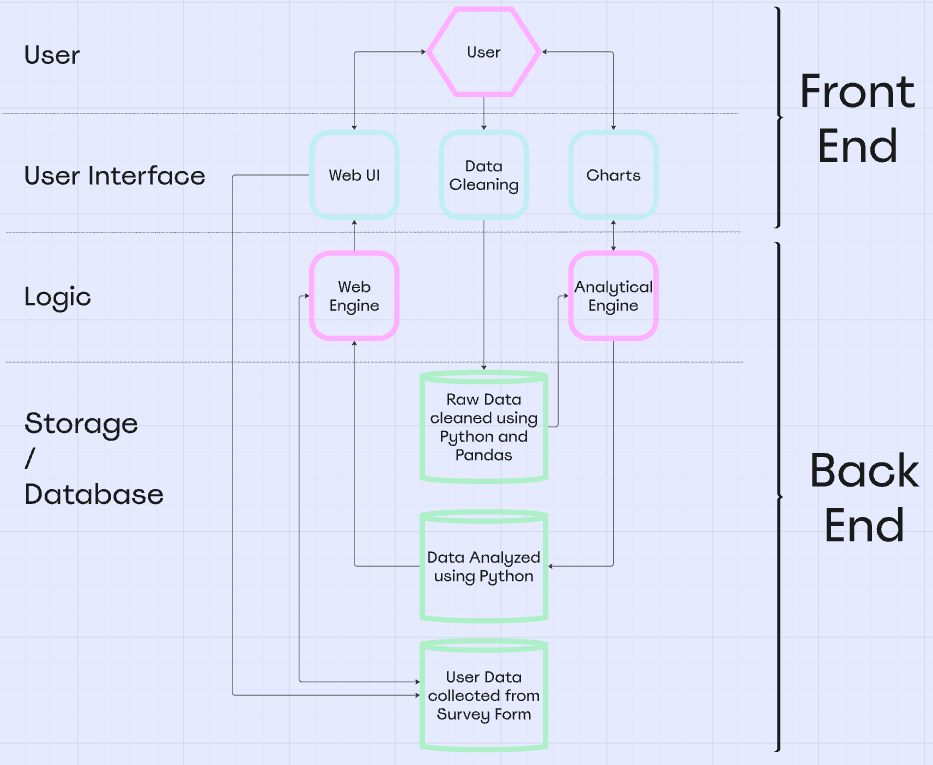

2: Investigation
In order to start my investigation process, I decided to take a look at what datasets were available to me and how I could manipulate them to display them in a way that is both aesthetically pleasing and also informative to the user. One of my biggest interests at the moment is tanks and military vehicles, however I could not find any datasets about them that I could use. Several websites linked in the brief all have great datasets on other topics however none of them suited my interests because they were either incomplete, lacked the relevant data for me to complete my project and satisfy the brief or were irrelevant to issues/topics I’m interested in today, which was a major factor for me when it comes to deciding on a dataset. Therefore, I went down a long trail of space-related datasets and eventually landed on a page from the government of the United States of America, with a dataset about meteorite landings, sightings and data about them. This was my chosen dataset as I thought this was the most suitable one I could find and also I thought that I could shed some light on how unbelievably diverse and interesting something as mundane as an icy, metallic rock falling from deep space can be.
I believe the target audience for this project is people such as myself who are amazed by space and also by meteorites in general. This includes meteor collectors, both young and old, and meteoriticists, scientists dedicated to studying meteors and comets.
3: Plan and Design
For my project, I decided to settle on a dataset from the US government regarding the landings of meteorites on Earth. My reasoning for choosing such a dataset lies with my profound interest in space and anything outside of Earth. This includes meteors, and the idea of objects billions of years old landing on our planet fascinates me.
I decided to approach this using the AGILE method, in which I tackled each particular problem bit by bit until I was happy with it and came back to it if there was an issue at any point.
In terms of technologies, I would use Thonny to program the Python area of the project and using libraries such as Pandas, matplotlib and Firebase to both clean, analyse and then store the dataset I had found. When it comes to storing the cleaned and analysed data, Firebase and its Realtime Database feature would be used for storing whatever data I clean, analyse and collect.
Visual Studio Code would be used for programming anything that wasn’t programmed using Python. This included the stylesheet for the website, which is programmed in CSS and the website itself, which is programmed using a combination of HTML and JavaScript.
For making the video at the end of the project, OBS Studio would be used for the screen capture which is convenient for me as I am already familiar with OBS and how it functions. In terms of editing the video, KDENlive would be used to edit it however I have never heard of this program before, let alone used it. However, I am very familiar with other editing programs such as Wondershare Filmora and DaVinci Resolve, and KDENlive looks similar enough to them so I shouldn’t find much difficulty in using it.
Architechture Diagram

Data Cleaning Flowchart
Main Page Wireframe
Survey Wireframe
4: Progress Log
Week 1
Dataset being searched for
Multiple dataset candidates that suit my interests found
Week 2
Chosen dataset selected from reliable source
Dataset cleaning using Python and Pandas begun
Week 3
Firebase account created
Firebase initialisation started
Week 4
Dataset cleaning complete
Clean data in the form of dictionaries was uploaded to Firebase
Week 5
Data analysis roughly started
Rough data analysis completed with more dictionaries
Week 6
Data analysis complete
Analysed data separated into individual dictionaries with the data I want
Uploaded to Firebase as separate dictionaries
Week 7
HTML website very roughly started
Styling and font/chart choice created
Week 8
Website layout and element arrangement selected
Further HTML and JavaScript website progress
Week 9
Form completed
Form response data (3 datatypes) uploaded to Firebase
Week 11
3 data charts created
Code for charts being worked on
Week 12
Website text finalised
Charts completed
One problem I faced while creating my project was that the charts really didn't like to conform to the styling rules I set out for them. On one occasion, I tried to style my three data charts to be on top of each other with their accompanying descriptive text on the left of the page. However, because of some very discreet spelling error I made in the code, it caused the three charts to simply not render. I solved this problem by locating and fixing the spelling error by cross-checking with all the other charts and stylesheets I had and eventually I got all three charts working again.
This code above here is the beginning of the analysis algorithm underneath the Firebase initialisation code. It searches through my dataset and returns the lightest meteor specimen followed by the heaviest specimen, using the same code block with variables changed.
This block of code above is responsible for creating a graph with this data using the library matplotlib and also sending it off to Firebase for the purposes of graphing later on.
The above code separates the classes of meteors into a dictionary, with the key being the class type and the value being the amount of meteors in the dataset that fit description. It also packs it up in a form to send to Firebase and create a chart using matplotlib.
This final piece of above code seperates the meteors into a dictionary by how old they are, with year groups ascending in 10 years being the keys and the number of meteors that fell in the key's year being the value. It also gets sent off to Firebase and graphed using matplotlib.
5. Evaluation
I believe that my artefact has satisfied every requirement that was set out for me in the brief and has done it in an efficient manner. It cleans and analyses data, creates charts, displays charts, and stores data from users in the form of a survey to display them as a summary.
In terms of improving my project, I think that I could make it more aesthetically pleasing by including some movement and transitions into the images, charts, text and buttons, such as making them move a few pixels downwards while also fading in from transparent to opaque. I could also have made the survey page look a lot nicer if I had the time to which I unfortunately did not.